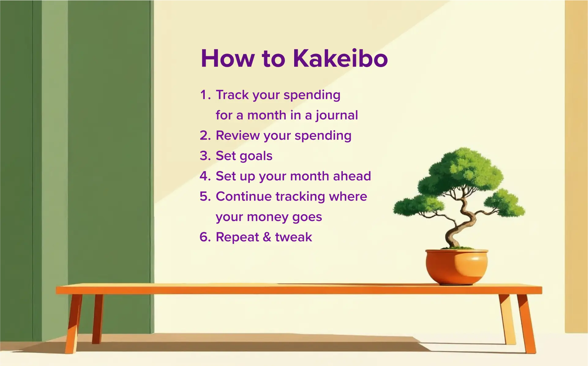
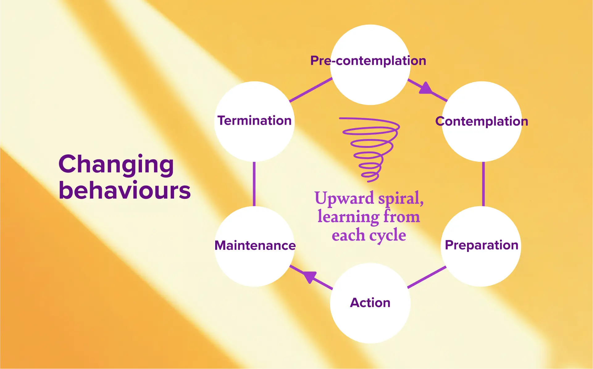
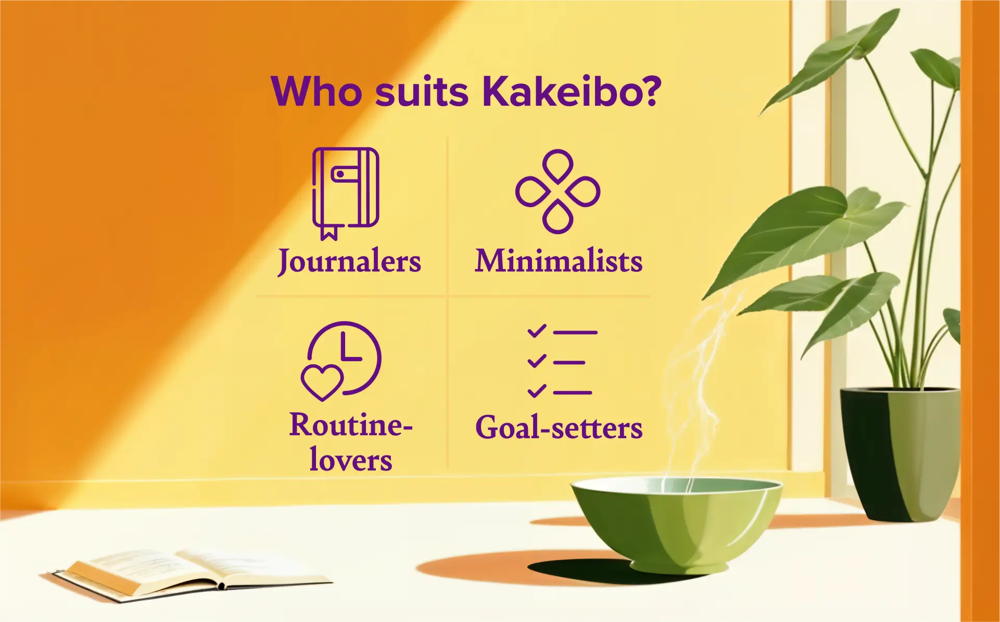

A ledger with a mindful focus
Kakeibo (“household account book”) became known in Japan in the early 1900s through the journalist Hani Motoko. In modern use it is less a strict formula than a repeatable way to connect income, spending and personal priorities.
Rather than changing everything at once, begin by observing. A written record and a regular review make habits visible, and any changes can be gradual and specific to your circumstances.
Four ways to look at spending
The four categories are a practical budgeting lens, not moral labels. Rename them to fit your life.
Survival
Essential everyday expenses and necessities.
Optional
Non-essential purchases and discretionary spending.
Culture
Books, learning, entertainment and experiences that enrich everyday life.
Extra
Unexpected expenses and occasional costs.
The monthly cycle
- Start: record income and fixed costs; add a savings target only if you want one.
- Track: log a purchase, choose a category, and take a one-tap pause.
- End: look over the month’s totals and notice where spending gathered.
- Reflect: pick one thing to keep, change or explore in the coming month.
These are prompts, not rules. A category is a tool for understanding a purchase, never a score or a judgement.

Four questions each month
- How much is available?
- How much would I like to save?
- How much did I spend?
- What could I change next month?
Small steps, with learning along the way
Recording makes behaviour visible, and visibility makes change easier to choose. Keep the habit small: capture what you can, then return without blame. Consistency matters more than perfection.

Who might enjoy it?
A reflective budget can suit people who like journaling, gentle routines, flexible plans or working toward a personal goal.
What to keep in mind
Regular entry takes attention, and missed purchases can make a review less complete.

Gentle prompts for your reflection
- Which purchase felt most useful or meaningful?
- Was there a choice I would approach differently next time?
- What would I like to make room for in the next period?
begin where you are.
For further reading: PocketSmith’s guide to Kakeibo. The guide text here is an original summary.